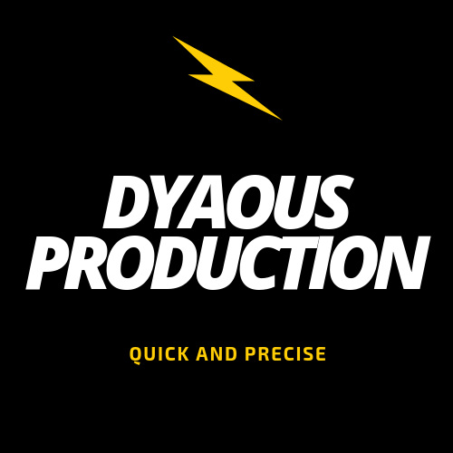

 TUTORIAL MEMBUAT VIDEO JADI UNIK!
TUTORIAL MEMBUAT VIDEO JADI UNIK!
-------------------------------------------------------------------------------------
GIMANA SIH CARANYA?
1.Siapkan tema kalian terlebih dahulu
Penentuaan tema bisa sangat berpengaruh sekali nih buat kelanjutan naskah dan untuk menarik peminat.
2. Temukan Crew yang hebat!
Ini sangat berpengaruh dalam kinerja kalian karena kalian hanya bertemu mereka untuk menjadi teman diskusi dan usahakan tidak menimbulkan pertengkaran dalam forum kamu :)
3. Siapkan Kamera, Latar, Tata rias, Dekorasi,dan lain-lain
usahakan tempat yang kalian gunakan sesuai dengan suasana yang akan kalian bawa.
4. Sesuaikan peran Aktor/Aktris
Pemilihan pemain juga gak bisa disepelekan karena merekalah yang membuat film bisa menyentuh hati penonton atau enggak
5. Gunakan aplikasi editing yang sesuai
sehingga kalian akan lebih mudah mengedit.

silahkan pencet gambar untuk kembali :)